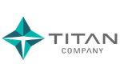
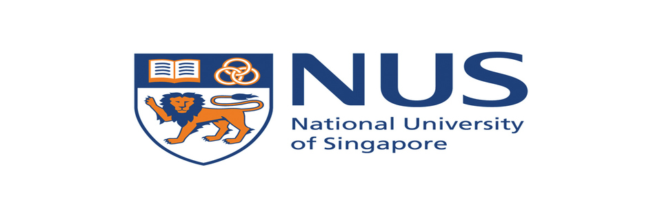

Experience
Research, engineering, and teaching roles across industry and academia.

Summer Research Intern — Emergence AI
- Worked with a long-term memory system for conversational agents.
- Achieved SOTA on LongMemEval with 86% accuracy, surpassing the previous best by 15%.
- Developed specialised agents for enterprise tasks in planning and self-improvement.

Graduate Research Assistant — UMBC
- Enhancing mathematical reasoning in LLMs through human-driven learning techniques.
- Designed Sim2Real framework with YOLO object detectors — 85% transfer success to real-world robots.
- Enhanced nano drone navigation efficiency by 30% using Hierarchical RL.
- RLHF via TAMER (Scalar binary feedback) for sequential decision-making agents.
- Integrated graph attention networks in R-GCN — 20% improvement in sample efficiency.
Graduate Assistant — UMBC
- Assisted in teaching CMSC 691.4 (Intro to Data Science) for 50+ students, ensuring 95% assignment completion.
- Collaborated with professor on student projects, increasing engagement rates by 20%.

Software Engineer — Titan Company Limited
- Built Spring Boot + REST API web app for 8,000+ employees — 40% reduction in data retrieval time.
- Python dashboard for login analytics — 25% improvement in user engagement tracking.
Software Engineer Intern — Titan Company Limited
- Improved software reliability by 30%, reduced bug occurrences by 20%.
- Tested BPM-related applications, increasing process efficiency by 25%.

Research Intern — National University of Singapore
- Achieved 98.5% accuracy on credit card fraud detection — outperformed ANN, RF, SVM.
- Advanced preprocessing reduced data redundancy by 25% and training time by 30%.